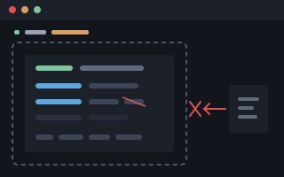

Shoddy · Picker
SELECT and DESCRIBE inside declared SQL Server databases. Fettler's boundary, applied to a catalog — and nothing else can be said, asked, or run.
An assistant given pick cannot go wandering through a server.
Every object a query touches must sit inside a database you
declared ahead of time — the same move Fettler makes with trees,
made against a catalog instead of a disk. Outside the declared
databases everything is refused: selecting, describing, listing, even
learning that a table exists. There is no default database to fall
into, no USE to change it, and no way to reach a linked
server, a system view, or a stored procedure. The only statements it
will carry are a single SELECT and a metadata
DESCRIBE, and both come back through the same disclosure
screen Fettler runs.

pickbounded SQL · no shell in betweenpick — the fettle/fettler arrangement, named for
the rag pickers of the shoddy trade, who
picked and graded the stock by hand and altered none of it. It is a
third executable in this repository, beside fettle
and burler: its own MCP server, its own CLI, its own
configuration, and no project reference to either of the others..picker.json names servers, and inside each server the
databases that exist as far as pick is concerned. That list is the
entire world:
FROM Customers
is resolved by searching the declared databases — never by asking
the connection what database it happens to be sitting in. If two
declared databases both have a Customers, the query is
refused as ambiguous, naming both, and the fix is to qualify.OtherDb.dbo.Anything, where OtherDb is real
but undeclared, is refused in the same words as
Sales.dbo.NoSuchTable, where the table never existed. A
refusal that distinguished the two would let a caller map the server by
reading refusals — the hidden-is-absent rule Fettler applies to
paths, applied to a catalog.sys.* and
INFORMATION_SCHEMA are refused by name, and the catalog
functions that answer the same questions —
OBJECT_DEFINITION and its relatives — are refused
with them. What pick will say about structure, it says through
describe, which respects the scopes.Three grant words govern everything a scope may do —
list, select, describe —
and five tools spend them. The CLI verbs are the same words, and the
MCP answers are byte-identical to pick VERB --json.
| Tool | What it answers |
|---|---|
catalogs | the declared servers, databases and scopes — the boundary itself, answered without opening a connection |
objects | the tables and views this caller may see: only objects whose scope grants list, and never a hidden one |
select | one SELECT statement, through the gate, screened on the way out |
describe | an object's columns, indexes and keys from the catalog — with a shape hash, so a caller can tell when a table changed underneath it |
doctor | whether the configuration loads, whether each server answers a bounded knock, and whether the screening models are where the configuration says — without ever printing a credential |
An object whose scope grants no list is absent from
objects and refused as nonexistent everywhere
else. An object that is listed but not granted select is
refused honestly instead, naming what its scope does grant —
because its existence was already disclosed by the listing.
Every statement is parsed to a syntax tree before anything touches a
connection, and the tree is walked against an allowlist of
constructs the gate understands — anything unrecognised refuses
the whole statement. What passes is rewritten before it runs: every
reference to its full three-part name, SELECT * expanded
to the columns this caller is actually permitted. A hidden column is
refused everywhere it could appear — the select list,
WHERE, ORDER BY, inside expressions —
in the same words as a column that does not exist.
Every refusal, in full →
A database or a scope may declare screen, exactly as a
Fettler tree does, and the mechanism is the same one:
tier one matches structured
identifiers in process with nothing installed, the model-backed
categories are judged by models you
install through the same burler sidecar, one detection refuses the whole response,
and the refusal names a category and a count and quotes nothing back.
No rows are trimmed to make a result pass — a result set with the
offending rows quietly removed would be a fabricated answer wearing a
clean verdict. Screening, for the rows
→
burler beside it, and the
registration.